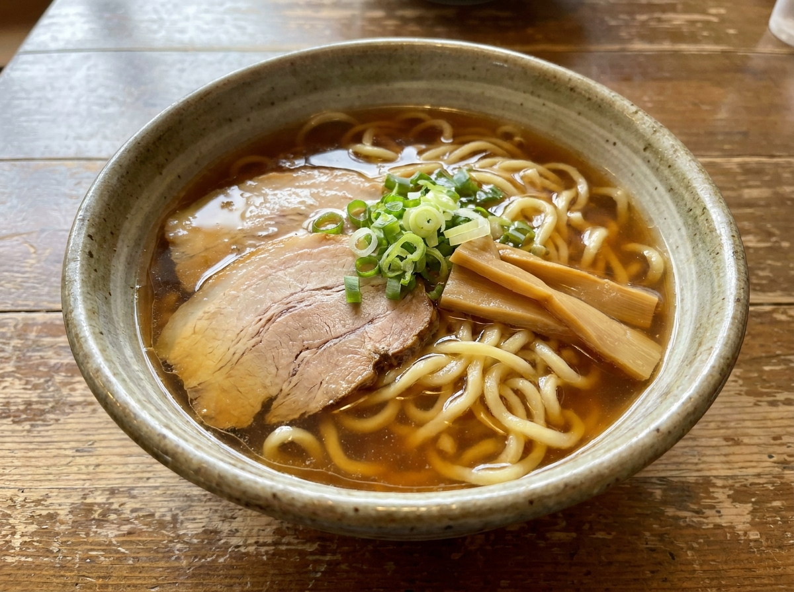
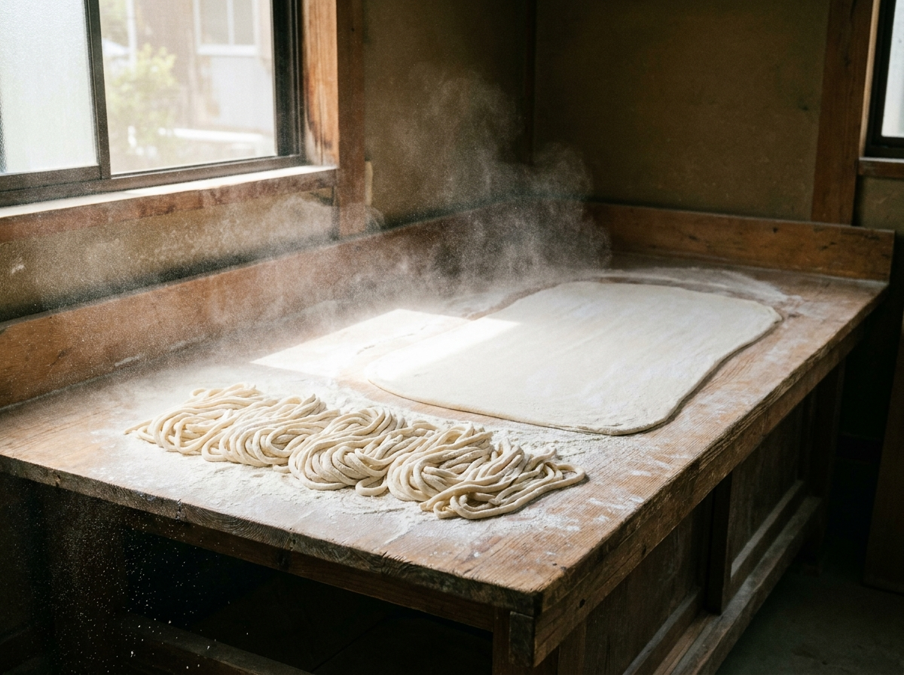

醤油
澄んだ琥珀色のスープに、極太の手打ち縮れ麺。看板の一杯です。
TEUCHI RAMEN — SHINGASHI, KAWAGOE
打ちたての極太麺を、無化調の一杯で。
川越・新河岸の手打ち麺のラーメン店です。
営業日・営業時間はInstagramでご案内しています
※画像はイメージです
ABOUT
本川越の間借り店「Do-jin」から、2024年1月に新河岸へ。東武東上線・新河岸駅から歩いて5分ほどの小さなお店です。店の外から、店内で麺を打つ様子が見えることも。
スープは化学調味料を使わない無化調。大山ガラや丸鶏、しじみ、煮干し、利尻昆布などから出汁を引いています。「無化調のキレのある醤油スープと自家製の極太手揉み縮れ麺」——クチコミでも、麺とスープの組み合わせが評判のお店です。

一口で、人気の理由がわかる。
※画像はイメージです
SHOP INFO
| 店名 | 自家製手打ち麺 禿（かむろ） |
|---|---|
| 住所 | 埼玉県川越市砂929-2 |
| アクセス | 東武東上線 新河岸駅 西口 徒歩約5分 |
| 営業日・時間 | 変更があるため、最新はInstagramをご確認ください |